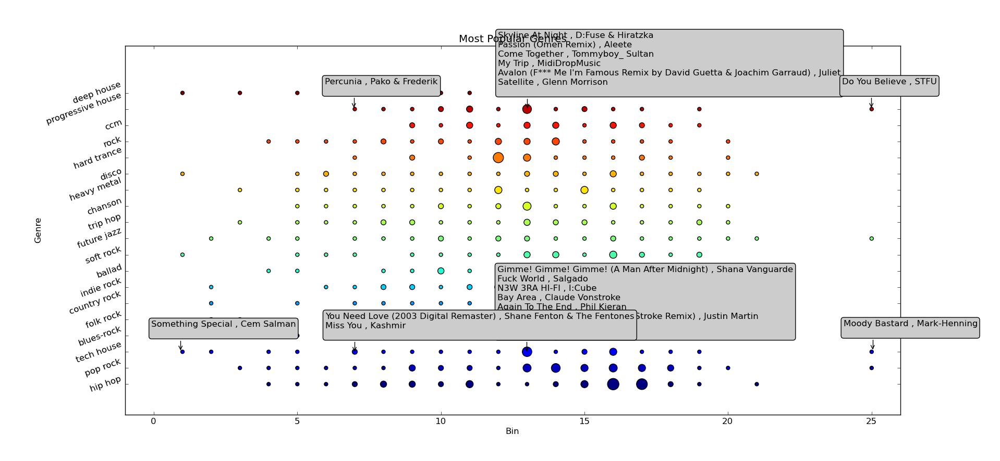

Visualization
Plotting the results of ISOMAP to discover relationships among songs
ISOMAP Data
Raw Data
Before determining a strategy for processing the ISOMAP output to find clusters or groups of similar songs, we examined the raw data in a histogram to see if there were any trends in the output data. The histogram clearly shows the ISOMAP output is relatively normal with a lot of songs having similar scores around zero and a much smaller number of songs in the tails.
This would seem to indicate that the majority of songs are related and similar given the distribution of scores around 0, with only a minority of songs being radically different from the center. From this, we decided that it may be worthwhile to investigate the ISOMAP output through grouping songs into genres so as to discern clusters especially within the middle 50% of scores.
Grouping by Top Genres

We processed the ISOMAP data to find the top ten genres (determined by the genres with the greatest number of associated unique tracks) and then created a stacked bar graph (akin to a histogram) to display the frequency of scores within this grouping. The graph to the left displays each genre as a distinct color in the bar and the size of the bar indicates the number of tracks for the genre and score range.
Interestingly, even within a genre, scores still spread across a broad range showing dissimilarity within any one genre. However, the majority of tracks within any genre do cluster around a smaller score range (still somewhat normal) indicating a great degree of similarity within genre which is expected. We thought this could be a good start for determining recommendations. So, we proceeded with the genre based grouping to discern more about song clusters and their similarity.
Clustering
Clusters in Full Dataset
Searching for clusters within the full dataset proved difficult. Clear clusters was partially related to the number of score "bins" used to separate the individual tracks into groups. In the above graphs, each circle represents a unique group of tracks that are part of a specific, unique genre and score bin. The left graph uses 15 mins while the right graph uses twice as many bins (30). While the 30 bin graph provides more separation, the 15 bin graph still shows similar results in that one can still see some genres (or colors) have generally more and larger circles than others and these tend to be around the center or slightly right of center. Outside of these more obvious large groups, there is a lot of diversity, which is to be expected in music.
Because there were some clearly different data points - specifically points that were significantly larger than other points - regardless of the number of bins used, we decided that exploring these larger "clusters" would prove worthwhile in recommending songs.
Clusters in Largest Genres
To explore the larger data points seen in the full dataset plots from above, we sorted each track and its associated ISOMAP score into genres and looked at tracks that were in one of the top fifteen genres. Where top genres were measured by the number of tracks that were part of that genre (e.g. top 15 were the largest 15 genres by track count).
This graph shows genres against bin, where each bin maps to a score range (as in initial histogram). Each data point is colored by its genre and is sized according to the number of songs meeting that data points criteria (in the genre and score bin). Each point is also annotated with the exact tracks that map to that genre and bin. From this specifically, we attempted to recommend songs
We would expect songs within the same circle to be similar and the further from the circle you go to the left or right the more dissimilar the song relative to the initial point of comparison. This is interesting as this graph suggests a lot of diversity within any genre, since all spread across the majority of bins, with some even having points far away from the center. While this may seem unexpected, the genres displayed, although indicative of a particular style, do not require that songs be exactly similar and tracks do cross genre classifications, in that they can be considered part of more than one genre. So, a future direction would be to order genres by relatedness and look for similarity within score bin at nearby genres and we would expect to see more similarity within bin across genres than within genre.
Below we provide an example from the Progressive House genre shown in this graph. The 2nd row from the top has open annotations for the large center circle with several tracks two of which are available below and the two left and right outlying points, of which the far left track is provided.
Song Recommendations
From the graph above, we were able to create song recommendations based on similarity. These two songs were similar as they were in the same cluster - same score bucket (13) and same genre (Progressive House).
Come Together - Tommyboy & Sultan
My Trip - MidiDropMusic
Whereas, this song, although within the same genre (Progressive House) as the above two, was in a very different score bucket (7), and thus despite being in the same genre is different from these two (less similar).
Percunia - Pako & Frederik